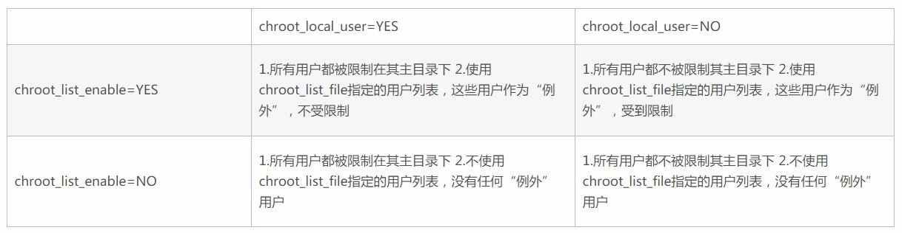
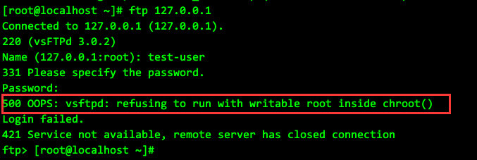
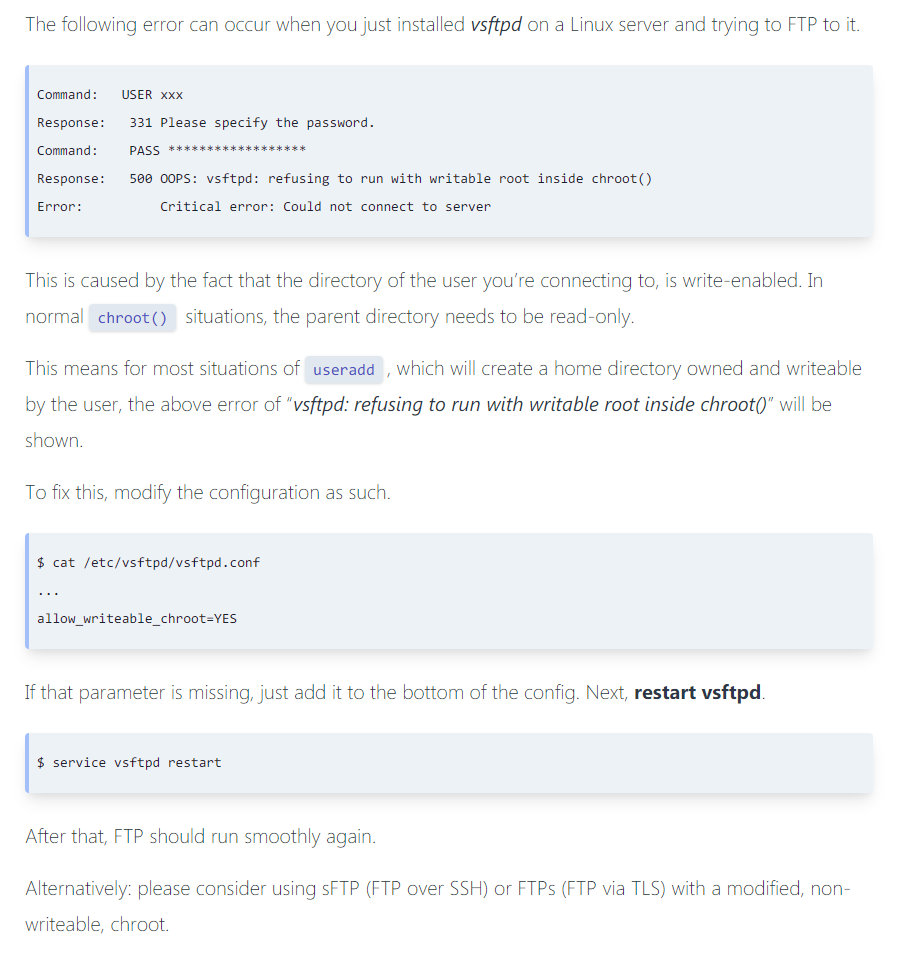
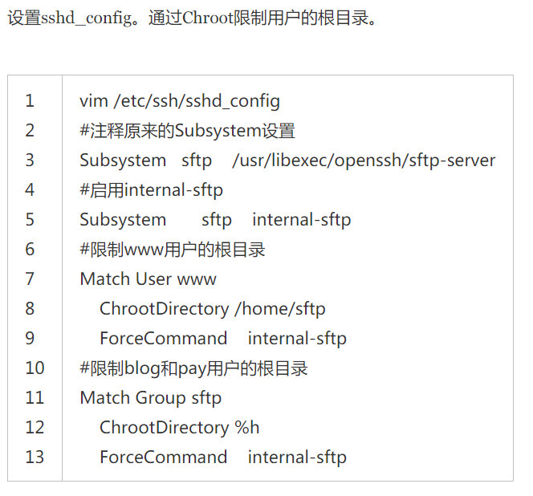

vsftpd设置chroot
https://blog.csdn.net/bluishglc/article/details/42398811
chroot_local_user #是否将所有用户限制在主目录,YES为启用 NO禁用.(该项默认值是NO,即在安装vsftpd后不做配置的话，ftp用户是可以向上切换到要目录之外的)
chroot_list_enable #是否启动限制用户的名单 YES为启用 NO禁用(包括注释掉也为禁用)
chroot_list_file=/etc/vsftpd/chroot_list #是否限制在主目录下的用户名单，至于是限制名单还是排除名单，这取决于chroot_local_user的值，我们可以这样记忆： chroot_local_user总是一个全局性的设定，其为YES时，全部用户被锁定于主目录，其为NO时，全部用户不被锁定于主目录。那么我们势必需要在全局设定下能做出一些“微调”，即，我们总是需要一种“例外机制"，所以当chroot_list_enable=YES时，表示我们“需要例外”。而”例外“的含义总是有一个上下文的，即，当”全部用户被锁定于主目录“时（即chroot_local_user=YES），"例外"就是：不被锁定的用户是哪些；当"全部用户不被锁定于主目录"时（即chroot_local_user=NO），"例外"“就是：要被锁定的用户是哪些。这样解释和记忆两者之间的关系就很清晰了！

此处有坑
https://ma.ttias.be/vsftpd-linux-500-oops-vsftpd-refusing-run-writable-root-inside-chroot/
问题现象

解决办法

用户可以使用 ftp, 但用户shell 是/sbin/nologin 的需求
在 /etc/shells 里添加/sbin/nologin
SFTP设置chroot
https://www.cnblogs.com/wish123/p/7071317.html
可以细化到每个用户的单独设置

设置该用户不能逃逸出的目录为 /home/sftp
则 /home/sftp 这一级目录属主为 root
权限mode 最多为 755 --- 该用户如果不能对这一级目录进行查看也无法切换到子目录
在这一级建立各子目录, 该用户对这些子目录有完全操作权限
ChrootDirectory 的所有父目录的权限最高只能是755 ，否则会抛出下述错误！
Read from remote host 172.16.xx.xxx: Connection reset by peer Couldn't read packet: Connection reset by peerSFTP Permission denied处理
com.jcraft.jsch.SftpException: Permission denied
问题的原因是，SFTP服务器的SELINUX在阻止